Taller independiente de software
Hacemos realeslos proyectos que parecen imposibles
Un RPG que vive por su cuenta, un verificador de noticias, un flujo de trabajo con agentes de IA… Creamos a la vista y con la puerta abierta.
zeldris.github.io/Portal-Galivelop · Galicia + Develop
42°52′ N
8°33′ W